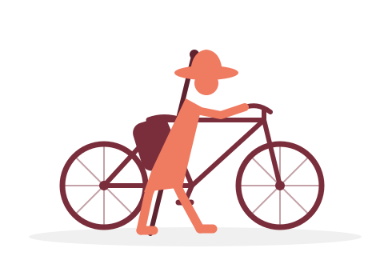

Lucca → Rome
A father and son, ~400 km by mountain bike, on an old road to an old city.
Padre e figlio, ~400 km in mountain bike, su un’antica strada verso un’antica città.
The RideIl viaggio
Aurelio and I are setting out to ride the southern stretch of the Via Francigena by gravel bike — the ancient pilgrim road that has carried travelers from northern Europe to the tomb of St. Peter for over a thousand years. Archbishop Sigeric of Canterbury wrote down his route home from Rome in 990 AD, and pilgrims have followed roughly the same line through Tuscany and Lazio ever since.
Io e Aurelio partiamo per percorrere in gravel bike il tratto meridionale della Via Francigena — l’antica strada dei pellegrini che da oltre mille anni conduce i viaggiatori dal Nord Europa alla tomba di San Pietro. L’arcivescovo Sigerico di Canterbury annotò il suo itinerario di ritorno da Roma nel 990 d.C., e da allora i pellegrini seguono press’a poco la stessa linea attraverso la Toscana e il Lazio.
We start in Lucca and finish at St. Peter's in Rome — eight days, and whatever the road decides to teach us along the way. Below is our planned itinerary and the GPS tracks we're using to navigate our stages in this journey.
Si parte da Lucca e si arriva a San Pietro, a Roma — otto giorni, e tutto ciò che la strada vorrà insegnarci lungo il cammino. Qui sotto trovate il nostro itinerario e le tracce GPS che useremo per orientarci nelle tappe di questo viaggio.
- 421KilometersChilometri
- 8DaysGiorni
- ~9,400Meters climbingMetri di dislivello
- 2PilgrimsPellegrini
The RouteIl percorso
Switch basemaps with the control at the top-right of the map: CyclOSM highlights cycle routes and surfaces; OpenTopoMap shows contour lines and terrain. Data © OpenStreetMap contributors. Click a stage below to download its GPX file.
Cambia mappa con il controllo in alto a destra: CyclOSM evidenzia gli itinerari ciclabili e i fondi stradali; OpenTopoMap mostra le curve di livello e il rilievo. Dati © OpenStreetMap. Clicca una tappa qui sotto per scaricarne la traccia GPX.
Elevation profile, Lucca (left) to Rome (right) — roughly 9,400 m of total climbing across the ten stages. Hover to read height & distance.
Profilo altimetrico, da Lucca (sinistra) a Roma (destra) — circa 9.400 m di dislivello totale sulle dieci tappe. Passa il mouse per leggere quota e distanza.
Daily PlanProgramma giornaliero
| DateData | StageTappa | DistanceDistanza | Overnight stayPernottamento |
|---|---|---|---|
| 19 Jul | Lucca → San Miniato GPX ↓ | 46 km | Le Dimore del Seminario |
| 20 Jul | San Miniato → San Gimignano GPX ↓ | 42 km | Monastero di San Girolamo |
| 21 Jul | San Gimignano → Siena GPX ↓ | 49 km | Ostello Casa delle Balie conf. 3632 |
| 22 Jul | Siena → San Quirico d’Orcia GPX ↓ | 54 km | Hotel Palazzuolo |
| 23 Jul | San Quirico → Radicofani GPX ↓ | 35 km | Casa della Piazza conf. 6883255559 |
| 24 Jul | Radicofani → Bolsena GPX ↓ | 55 km | Casa di Preghiera Santa Cristina |
| 25 Jul | Bolsena → Sutri GPX ↓ | 71 km | Rifugio del Pellegrino |
| 26 Jul | Sutri → Rome GPX ↓ | 70 km | Casa di Beta |
Open the daily Pilgrim Companion → — a breviary for each day: morning prayer, Scripture, a reading of the road, and an evening reflection from Augustine and Benedict.
Apri il Breviario del pellegrino → — per ogni giorno: preghiera del mattino, Scrittura, il racconto della strada e una riflessione serale.
About the Via Francigena: recognized as a Council of Europe Cultural Route, the Francigena isn't one fixed path but a corridor of historic ways — so the GPS tracks above follow the official Via Francigena cycle-route stages, which are broken up slightly differently than our day-by-day plan (our last two days into Rome each cover two marked stages back to back).
Sulla Via Francigena: riconosciuta come Itinerario Culturale del Consiglio d’Europa, la Francigena non è un unico percorso fisso ma un corridoio di vie storiche — perciò le tracce GPS qui sopra seguono le tappe ufficiali del percorso ciclabile della Via Francigena, suddivise in modo un po’ diverso dal nostro programma giornaliero (le nostre ultime due giornate verso Roma coprono ciascuna due tappe ufficiali una dopo l’altra).